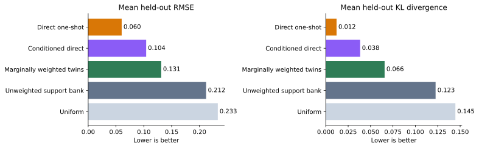
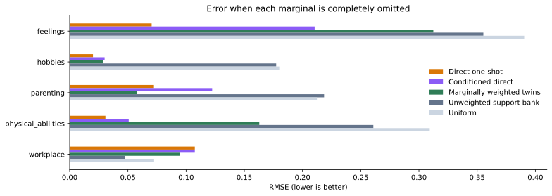
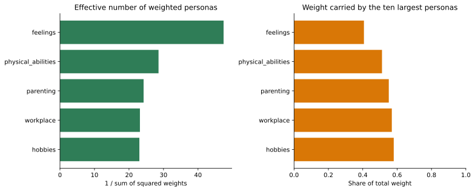
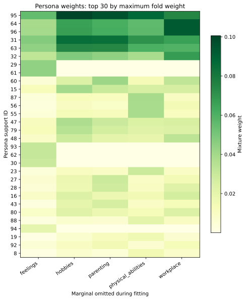

Build an auditable synthetic population from reported survey marginals — and measure its performance.
This page is the complete worked methodological argument: it explains the foundational Pew run, its failed approaches and diagnostics, and the richer augmentation run in which three frontier models propose new work-and-family moments, GPT-5.5 generates item-complete personas, and iterative support-geometry repair makes the combined targets feasible. The shorter companion case study remains available as a focused version. For current option names and defaults, use umriss <command> --help. During a live project, umriss guide and umriss next are the authoritative workflow interfaces.
The problem this tutorial solves
Suppose a survey report tells you how the population answered each question, but does not release the respondent-level records. You can see that 68 percent chose one answer on a hobbies question and 81 percent chose one answer on a physical-abilities question, for example, but you cannot see whether the same people gave both answers. The published tables describe each question separately and omit the relationships among them.
Those relationships matter if you want to ask a new question of the population, compare subgroups of response patterns, or use the survey evidence in another simulation. A collection of independent percentages cannot do that work by itself. We need a population of distinct profiles whose answers vary together and whose aggregate responses reproduce the reported evidence.
That is what “digital twins” means in this tutorial. Umriss creates synthetic survey-response profiles, measures how each profile would answer the full battery, and assigns population weights to the profiles. The result is not a reconstruction of the original respondents. It is one explicit, testable joint distribution consistent with the information we chose to use.
The tutorial follows the entire construction using a real five-item Pew Research Center battery. We record the observed marginals, deliberately build a broad and initially near-uniform support of personas, fit their weights to the Pew targets, withhold each target in turn to test prediction, compare against direct frontier-model forecasts, inspect which personas receive weight, and finally export the fitted population as a reusable EDSL AgentList.
The ordering is important. Personas are generated before the target percentages enter the fit. Coverage is measured before calibration. Validation withholds aggregate marginals rather than consulting respondent microdata. Every consequential prompt, model result, weight vector, diagnostic, and exported agent remains inspectable.
The example uses real Pew microdata
The example comes from Pew Research Center’s nationally representative American Trends Panel, Wave 154, fielded among U.S. adults in September 2024. The normalized source contains 6,104 respondent records and Pew’s survey weight. Respondents were asked whether men and women are basically similar or basically different across five domains.
We use the microdata only to calculate the five weighted marginal distributions below. The support model never receives respondent rows, demographics, respondent-level answer combinations, or the target percentages.
Domain
Basically similar
Basically different
Hobbies and personal interests
32.0%
68.0%
Physical abilities
19.1%
80.9%
Approach to parenting
28.8%
71.2%
How they express their feelings
11.0%
89.0%
Things they are good at in the workplace
57.3%
42.7%
For example, the physical-abilities vector \((0.1907, 0.8093)\) means that the weighted estimate is 19.1 percent “basically similar” and 80.9 percent “basically different.” Workplace abilities move in the opposite direction: 57.3 percent say similar and 42.7 percent say different. The feelings item has the largest “different” share, at 89.0 percent.
Every item has 6,104 valid records. The weighted denominator is approximately 6,091.07. The checked-in weighted-marginal audit table preserves the full-precision estimates and denominators.
Three files carry this step, and it is worth knowing what is inside each:
pew_w154_metadata.json (checked in) — the battery definition: question wording, item texts, option labels and codes, scale semantics, provenance, and the mapping from each tutorial item to its Pew source column and the survey-weight column. This file is the bridge between Pew's column names and the tutorial's item ids.
W154_DIFF1_respondents.csv (not distributed — obtain from Pew) — one row per respondent: a respondent id, one answer-code column per item, and Pew's survey weight. It is read only by this aggregation step and never reaches support generation or fitting.
weighted_marginals.csv (checked in) — the output: one row per item with the weighted share for each response option and the denominators, at full precision.
Excerpt of pew_w154_metadata.json (one item)
"items": {
"hobbies": {
"variable": "DIFF1_a_W154",
"source_column": "item_a",
"item_text": "Their hobbies and personal interests",
"question_stem": "In general, how do you think men and women compare
when it comes to each of the following?"
},
...
}
Excerpt of weighted_marginals.csv
item,item_text,similar,different,unweighted_n,weighted_denominator
hobbies,Their hobbies and personal interests,0.31999...,0.68000...,6104,6091.07...
physical_abilities,Their physical abilities,0.19070...,0.80929...,6104,6091.07...
Given an authorized local copy of Pew’s normalized respondent file, the aggregate inputs are reproduced with:
Local respondent-level source used only for this aggregation step. It is not passed to support generation or leave-one-out fitting.
--metadata
Maps each tutorial item to its Pew source column and option codes, and identifies the survey-weight column.
--out
Writes long-form weighted marginals: one row per item and response option.
The microdata reveals how answers co-occur, but that joint information is deliberately withheld from the reconstruction and evaluation. It is available only as a possible external benchmark for later research. The exercise here asks what can be reconstructed when the usable inputs are the five published-style marginals alone.
1. Record the battery and its targets
Battery metadata records wording, option order, scale semantics, and reported marginals. It contains population-level facts, not invented theories about respondent types. Each scale is declared ordinal or nominal; ordinal scales also state their direction. This prevents a generic algorithm from treating the first or last nominal category as an “extreme.”
The primary way to build this metadata is item by item, through the CLI — one question add per battery item:
umriss question add \
--battery pew_w154 --item hobbies --variable DIFF1_a_W154 \
--question-stem "In general, how do you think men and women compare when it comes to each of the following?" \
--item-text "Their hobbies and personal interests" \
--option "Men and women are basically similar" \
--option "Men and women are basically different" \
--scale-type nominal
Argument
Meaning
--scale-type
ordinal means option order has substantive meaning; nominal means it does not.
--scale-direction
Required only for ordinal scales. The Pew response is binary but not a graded low-to-high scale, so this battery declares it nominal.
Four more question add calls complete the battery. As a convenience, this tutorial ships the finished result — the pew_w154_metadata.json file excerpted above. Rather than repeating that path in every later command, import it into the workspace once under an id, and make it the active battery:
From here on, commands that need the battery simply omit --metadata: the active default applies, and an explicit path or id always overrides it. So that the implicit state never hides anything, every envelope produced under a default echoes resolved_defaults, recording exactly which artifacts it used; umriss status reports the active pair. Inspect a battery by id at any time:
What we are building in this step is the cast of characters for the synthetic population: a roster of hypothetical response profiles — short descriptions of ways a person might answer this battery ("someone strongly inclined to say men and women differ in how they express feelings," "someone who sees the sexes as basically similar across the board"). In the next steps, a model will estimate how each profile would answer every item, and the fit will assign each profile a population weight. The crucial constraint: the final population can only ever be a weighted mixture of the profiles created here. If no profile behaves a certain way, no amount of reweighting can produce that behavior later.
The support design is the recipe for that roster, and each choice in it shapes what the fit can express. Coverage guarantees at least one profile leaning toward every answer option of every item, so the fit can always move weight to match any reported marginal. Anchors add whole-battery patterns — here, a consistently-“similar” person and a consistently-“different” person — which is where cross-item structure can come from: correlations between items exist in the fitted population only if some profile carries them. Coherence controls whether a profile's lean on one item implies leans on the others, and intensity how strong the leans are. A design too small or too narrow makes the targets unreachable; a broader one is more expressive but costs more model calls to measure.
The design is a small checked-in YAML file — pew_w154_design.yaml — that makes every one of those choices reviewable and versioned. Here it is in full:
Reading it top to bottom: the design asks for 12 support profiles — complete item-option coverage (\(5\times2=10\) rows) plus two explicitly declared whole-battery anchors, one all-similar and one all-different. Coverage rows use item_specific coherence, so targeting “different” for physical abilities does not force “different” for workplace abilities or parenting. Because the response is nominal, the design does not derive anchors from “first,” “middle,” or “last” option positions. forbid_demographic_invention keeps generated profiles from acquiring made-up demographics, and the probability block pins how model answers must be expressed.
Import the design under an id, make it active, and validate it against the battery before anything is generated:
The resolved_defaults field is the audit trail for the workspace defaults: even though the command named nothing, its output records which battery and design it ran against.
A size below 12 would return DESIGN_TOO_SMALL. This check concerns support geometry. Later, each leave-one-out fold removes one Pew marginal from the fitting targets, estimates weights from the other four marginals, and scores the omitted marginal. It does not fit or score individual respondent answers.
4. Build and audit the support plan
umriss support build \
--tag pew_w154_diff1_n12 \
--out examples/pew_w154/run
The --out flags on this page are also optional. With a workspace, --tag alone is enough for the whole pipeline: artifacts are written to and read from the project's runs/<tag>/ directory by convention (--prompts, --raw, --support, and --derived resolve there too), and umriss export --tag <tag> --out <dir> copies a run out as a plain directory. This tutorial keeps explicit paths because its run artifacts are checked into examples/pew_w154/run/ as a public replication package — which is exactly what export produces.
Argument
Meaning
Alternative
--design
The reviewed schema-v1 YAML or JSON design.
--preset pattern-coverage compiles a preset directly, but the resolved design is still written.
Input, parameter, and output hashes for reproducing this exact plan.
The build manifest records the umriss version, input hashes, resolved parameters, creation time, and output hashes. This checked-in example was rebuilt with the current CLI and its prompts correspond to the current executed Results. Repeating an identical build reuses the artifacts; changing an input under the same tag requires an explicit --force.
Each coverage prompt states that its targeted domain may differ from the other domains. It asks for a readable second-person synthesis plus one explicit persona_details statement for every battery item. Parsing rejects incomplete detail sets and assembles the synthesis and statements into an agent trait whose detail grows with the battery. It also asks for subjective response probabilities. Target marginals are intentionally absent from every prompt.
The export reports the exact call count before execution and writes an immutable EDSL job object plus a manifest containing model and service specifications, the expected Results path, cost-estimate availability, and directly executable run and registration commands.
6. Run the real model jobs
ep run \
--jobs examples/pew_w154/run/pew_w154_diff1_n12.jobs.ep \
--output examples/pew_w154/run/pew_w154_diff1_n12.results.ep
A vector with a negative entry, the wrong number of entries, or a sum other than one is invalid. The parser records diagnostics; it does not clip or normalize the response behind the user's back.
Discarded 12-person pilot: why option coverage was not enough
The method’s critical construction step comes before fitting survey weights: generate enough support personas that their measured, equal-weight marginals are approximately uniform on every item. This is what separates the starting basis from the population being estimated. The bank is built without using Pew’s reported values; only after it passes this preflight check do those values enter as targets for reweighting.
The check must use the model’s returned probabilities, not merely count balanced prompt labels. Give every generated persona equal weight, average its response probabilities item by item, and compare the result with a uniform response distribution. For this binary battery the required starting target is 50 percent “similar” and 50 percent “different” on every item.
Item
Equal-weight support bank
Uniform target
Largest deviation
Hobbies
49.6% similar, 50.4% different
50%, 50%
0.4 percentage points
Physical abilities
25.3% similar, 74.8% different
50%, 50%
24.8 percentage points
Parenting
48.1% similar, 51.9% different
50%, 50%
1.9 percentage points
Expression of feelings
35.8% similar, 64.3% different
50%, 50%
14.3 percentage points
Workplace abilities
61.7% similar, 38.3% different
50%, 50%
11.7 percentage points
This 12-persona pilot therefore fails the method’s preflight requirement. It covered every declared item-option region, but coverage is not aggregate balance: each persona supplies probabilities for all five items, and its non-targeted answers collectively pull physical abilities and feelings far from 50–50. No Pew target marginals enter this calculation.
umriss validate marginals records the full-precision check in pew_w154_diff1_n12_support_uniformity.csv. The correct next step is not to accept this bank and reweight it. It is to generate additional personas targeted at the measured deficits, recompute the equal-weight marginals, and repeat until every item meets a declared tolerance. Only that accepted bank should be fitted to the reported survey marginals. The weight estimates below diagnose what this failed pilot would do; they are not yet a successful demonstration of the full procedure.
Leave-one-out validation produces five fitted weight vectors, not one. Each column below is a separate fit: the named marginal is withheld, and the weights are estimated from the other four marginals. A value of 57.9 percent for persona 8 in the “hobbies” column means that this support profile receives 57.9 percent of the synthetic population weight when hobbies are the omitted outcome.
Persona
Hobbies held out
Physical held out
Parenting held out
Feelings held out
Workplace held out
1. Similar hobbies
0.0%
0.0%
0.0%
2.8%
0.0%
2. Different hobbies
0.0%
25.2%
24.5%
29.1%
6.2%
3. Similar physical abilities
7.8%
0.0%
6.6%
5.3%
14.4%
4. Different physical abilities
0.0%
0.0%
0.0%
2.3%
0.0%
5. Similar parenting
0.0%
0.0%
0.0%
2.2%
0.0%
6. Different parenting
11.7%
6.1%
0.0%
23.0%
0.0%
7. Similar expression of feelings
0.0%
0.0%
0.0%
3.0%
0.0%
8. Different expression of feelings
57.9%
46.6%
47.3%
6.3%
37.7%
9. Similar workplace abilities
0.0%
0.0%
0.0%
2.5%
0.0%
10. Different workplace abilities
0.0%
0.0%
0.0%
1.8%
0.0%
11. Similar across all five domains
0.0%
0.0%
0.0%
1.3%
0.0%
12. Different across all five domains
22.7%
22.0%
21.7%
20.4%
41.6%
The weights are concentrated. Persona 8—the profile designed around different emotional expression—has the largest weight in four folds, while the all-different anchor receives between 20.4 and 41.6 percent in every fold. When physical abilities are held out, persona 8 receives 46.6 percent; because that item is omitted, this weight is learned from how the profile answers the other four items, not from its physical-abilities answer.
Several displayed values round to 0.0 percent. The optimizer may assign them tiny positive values, but they contribute negligibly at the shown precision. The complete unrounded audit is in pew_w154_diff1_n12_generated_support_weights.csv, with one row per persona and holdout fold. These are fitted mixture weights for synthetic support profiles—not estimates of the prevalence of literal real-world persona categories.
Method
Mean RMSE
Median RMSE
Maximum RMSE
Generated support mixture
0.09145
0.11232
0.13587
Unweighted support bank
0.14458
0.17584
0.24792
Uniform response baseline
0.23292
0.21238
0.39042
The comparison matters because matching held-in marginals is not enough. For each fold, the weights are learned from four domain marginals and used to predict the omitted fifth marginal. The microdata is not consulted. The generated mixture improves on both displayed baselines, but a mean RMSE of 0.091 is still substantial and should be reported as such.
8. Add personas until the measured marginals are uniform
The 12-person option-coverage pilot above is discarded. The real foundation enumerates all 32 possible binary response patterns across five items and elicits each pattern three times. Every replicate has a distinct prompt identity, producing 96 independently measured support points while keeping the intended one-way marginals exactly balanced.
Balance in the design rows is not sufficient. The model’s returned probabilities produce 95 unique vectors, all 32 joint modal-response patterns, matrix rank 5, and effective rank 4.93 out of 5. Its worst one-way marginal deviation is nevertheless 6.34 percentage points, so the measured bank still fails preflight.
umriss therefore computes the deficits relative to uniform, then creates a new batch of full-battery patterns aimed at those deficits. After parsing, the new rows are merged with the existing bank and measured again.
The measured probability bank to repair. Target survey marginals are not read.
--metadata
Item wording, option order, and survey context.
--n-add
Number of genuinely new personas in this repair round. Unique prompt identifiers prevent repeated patterns from becoming cache duplicates.
--tolerance
Maximum permitted absolute difference between any equal-weight response share and its uniform target.
--tag, --out
Stable artifact prefix and output directory for the reviewable prompts and design.
The generated job is executed with ep run, parsed, and merged with umriss support merge. The same cycle is repeated whenever umriss support uniformity reports needs_augmentation. These were real GPT-5.5 runs, not fabricated tutorial output.
Measured bank
New personas
Worst deviation from uniform
Decision
96
Balanced full-pattern foundation
6.34 percentage points
Continue
160
64
5.83 percentage points
Continue
208
48
4.85 percentage points
Accept
The procedure stops at 208 valid personas because that is the first measured bank that passes both kinds of preflight: all item marginals meet the five-point tolerance, and the support geometry remains diverse. It contains 206 unique vectors, all 32 joint patterns, rank 5, and effective rank 4.95.
This pre-calibration diagnostic comes from the accepted support bank. Physical abilities is the limiting item at 4.85 percentage points, just inside the declared five-point tolerance.
What the fit is doing
Everything so far built the bank of personas and measured their answer probabilities; nothing has touched the Pew targets. The fitting step that comes next rests on one identity. The marginals do not determine a unique joint distribution, so umriss fits nonnegative mixture weights over the bank of profiles it built.
Let \(p_{s,j}\) be support profile \(s\)'s probability vector for item \(j\), and \(w_s\) its population weight. The reconstructed marginal is
The generated profiles were deliberately spread over the response space. They are initially just support points; they do not have equal substantive prevalence. The fitted weights move mass toward profiles needed to reproduce held-in marginals. Held-out items test whether the resulting joint structure predicts information it was not fitted to.
The result is a calibrated synthetic population, not recovered respondents. Support geometry and regularization are identifying assumptions and must be reported.
9. Estimate weights and test omitted items
Only now do the real Pew marginals enter. In each leave-one-out fold, four reported marginals jointly determine one weight vector over all 208 synthetic personas; the fifth marginal is withheld and predicted. The respondent microdata is not used in fitting or validation.
The LOO command writes the data needed for every validation figure: one row per method and holdout, method-level summaries, one fitted weight for every persona in every fold, fit diagnostics, and the equal-weight support check. The plots below are generated from those files by umriss itself:
This writes five figures plus a JSON manifest recording their source directory and filenames. PNG and PDF are available through the same command.
What “held out” means
When hobbies is held out, its real 32–68 marginal is absent from the optimization. One shared weight vector is selected to match physical abilities, parenting, feelings, and workplace abilities jointly. The hobbies prediction is then the weighted average of the personas’ already-recorded hobbies probabilities. The same operation is repeated five times, withholding a different target each time.
The held-out target is therefore completely unseeded: neither its percentage nor respondent-level correlations are available to the fit. The question itself is not unseen. Its wording and each support persona’s response probabilities were fixed when the target-free support bank was built. This distinction prevents a stronger claim than the experiment supports.
Three ways to measure distributional error
RMSE measures probability-point error. For a held-out truth \(p\) and prediction \(\widehat p\) with \(K\) options,
It is zero only for an exact prediction and penalizes assigning too little probability to outcomes that actually have substantial mass. Values here use natural logarithms and are reported in nats.
Cross-entropy is the expected negative log probability assigned to the true response distribution:
The target entropy \(H(p)\) is irreducible and identical across methods for a given item. Thus method comparisons in cross-entropy are exactly comparisons in KL divergence. Cross-entropy remains useful because it has the direct interpretation of expected log loss; KL isolates only the avoidable excess.

Average performance across five completely omitted marginals. Lower is better. The figure is generated directly by umriss plot validation from the LOO summary artifact.
Method
Mean RMSE
Mean KL
Mean cross-entropy
Direct one-shot
0.06020
0.01206
0.56053
Conditioned direct prediction
0.10420
0.03840
0.58687
Marginally weighted twins
0.13124
0.06568
0.61415
Unweighted support bank
0.21191
0.12259
0.67106
Uniform response
0.23292
0.14468
0.69315
The marginally weighted twins clearly beat alternatives that do not use the other four reported marginals. Relative to an exact 50–50 guess, mean RMSE falls by 44 percent and mean KL divergence falls by 55 percent. They also improve substantially on leaving the accepted support bank unweighted. That is the evidence that jointly fitting the other marginals transfers information to a target whose true marginal was never supplied.
They do not beat the strongest direct baseline in this battery. A GPT-5.5 one-shot prediction made from the held-out question wording alone has mean RMSE 0.060 and mean KL 0.012, versus 0.131 and 0.066 for the weighted twins. That baseline is unseeded by survey percentages, but it carries a strong model prior about familiar gender-attitude questions. The result should be reported as a limitation, not hidden by comparing only with uniform.
There is also a contamination caveat. Pew Research Center surveys are prominent, widely reported, and extensively discussed online. A frontier model may have encountered the questionnaire, published toplines, news coverage, or closely related results during pretraining or subsequent model development. We do not know that this occurred for these exact marginals, but the possibility is material. The one-shot result is therefore a useful operational benchmark for what a frontier model can produce, not a clean test of prediction for genuinely unseen survey data. This is not a reason to omit the baseline; it is a reason to avoid interpreting its unusually strong performance as evidence of uncontaminated generalization.

The mixture beats direct one-shot on parenting and workplace abilities, is close on hobbies, and loses substantially on physical abilities and expression of feelings. The poor feelings prediction drives the mixture’s maximum error.
For parenting, the weighted twins reduce RMSE from 0.072 for direct one-shot to 0.057. For workplace abilities they reduce it from 0.107 to 0.095. Hobbies is close: 0.029 versus 0.020. Physical abilities and feelings reveal the failure mode. The four held-in marginals lead the weights to predict too much “similar” probability on those omitted items, producing RMSEs of 0.163 and 0.312. Those are substantive errors in the learned cross-item structure, even though the held-in residuals are small.
There are five weight vectors, one per omitted item, and each vector sums to one. The full audit has 1,040 rows—every persona in every fold—in pew_w154_diff1_uniform_n208_generated_support_weights.csv. Unlike the duplicate-heavy pilot, the fitted mass now spreads across materially larger support:
Held-out marginal
Largest persona weight
Effective support
Top-ten weight share
Hobbies
10.05%
23.01 personas
58.04%
Physical abilities
8.75%
28.56 personas
51.20%
Parenting
9.61%
24.23 personas
55.16%
Expression of feelings
5.48%
47.41 personas
40.69%
Workplace abilities
9.25%
23.17 personas
56.92%
These are mixture coefficients for synthetic support profiles, not estimated population shares of literal persona categories. The concentration diagnostics matter: a large bank can still produce a fit that relies on only a handful of rows.

Effective support translates each unequal weight vector into the equivalent number of equally weighted personas. The adjacent panel exposes concentration directly through the top-ten weight share.

The thirty personas with the largest weight in any fold. Columns are separate fits, not a single population estimate: changing the omitted marginal changes which response profiles can jointly reproduce the remaining four targets.
Passing the uniform and diversity preflight is necessary for interpreting this test. It does not guarantee that the synthetic profiles encode the correct cross-item relationships, as the physical-abilities and feelings results demonstrate.
10. Export the fitted digital twins to EDSL
The five LOO weight vectors answer validation questions; each deliberately omits a different real marginal. They are not the population to deploy. For export, fit one final weight vector using all five reported Pew marginals:
Supplies all five real population marginals. No item is held out in this deployment fit.
--tag, --out
Name and location for the final weights, predictions, and fit diagnostics.
The resulting coefficients sum to one and describe how much population mass each synthetic profile carries. Export them with the second-person personas recorded during the three support-generation rounds:
The current umriss prompt contract creates these second-person personas during support generation. This Pew bank predates that contract, so its 208 existing summaries were passed through a bounded GPT-5.5 perspective-rewrite job: preserve the substance, begin with “Your views,” and add no demographics, instructions, probabilities, or methodology. All 208 outputs passed the prefix check and none were duplicated. The migration manifest, jobs, results, and row-level rewrites are checked in. No support probability or fitted weight was changed.
May be repeated. These files supply second-person personas; stable job IDs reconnect them to rows after support banks have been merged and renumbered.
--weights
The single full-data mixture produced above. A multi-fold LOO file instead requires an explicit --holdout.
--persona-trait
The visible EDSL trait name chosen for this battery. Here every agent receives gender_attitudes.
--path
A git-backed EDSL AgentList package. Umriss saves it with agents.git.save() and verifies it with AgentList.git.load().
--minimum-weight
Optional pruning threshold. Retained coefficients are renormalized and the discarded mass is recorded in the manifest.
EDSL has no built-in survey-weight field or weighted AgentList.sample(). It does, however, treat every underscore-prefixed trait as hidden metadata: the value is serialized but excluded from the model prompt. Umriss therefore stores the coefficient as _weight, also writes a CSV sidecar, and leaves weighted sampling to the consumer.
What one exported agent contains
This is the highest-weight agent in the real five-marginal fit:
Name
umriss_95
Visible trait
gender_attitudes: Your views emphasize perceived gender differences in personal interests, physical abilities, parenting styles, and emotional expression, while seeing men and women as largely similar in workplace competencies.
None. EDSL retains its ordinary agent instruction.
The persona is descriptive state, not an instruction. It contains no support-design rationale, target marginal, probability-vector schema, or request to predict response probabilities. The hidden fields preserve provenance and population weight without influencing the agent’s answers.
Publish and reuse the AgentList
The checked-in package was pushed with the current EP CLI. It is unlisted: anyone with the alias or link can retrieve it, but it is not advertised as a public search result.
ep push examples/pew_w154/run/full_fit/pew_w154_full_fit.agents.ep \
--alias umriss-pew-w154-digital-twins \
--description "A weighted AgentList of 208 synthetic survey-response profiles calibrated by umriss to five Pew ATP Wave 154 marginals. Each agent has a visible second-person gender_attitudes persona trait and a hidden normalized _weight coefficient." \
--visibility unlisted \
--force
Argument
Meaning
OBJECT_PATH
The git-backed .agents.ep package produced by umriss twins export-edsl.
--alias
A stable human-readable identifier owned by the publishing Expected Parrot account.
--description
Records what the object contains and how it was constructed.
--visibility
private, unlisted, or public. This tutorial uses unlisted.
--force
Updates the existing owned alias. Omit it when publishing a new alias for the first time.
{
"object_type": "AgentList",
"length": 208,
"agent_count": 208,
"trait_keys": [
"_umriss_job_id",
"_umriss_support_id",
"_weight",
"gender_attitudes"
],
"sample": [
{
"name": "umriss_95",
"traits": {
"_weight": 0.10177999668210305,
"gender_attitudes": "Your views emphasize perceived gender differences in personal interests, physical abilities, parenting styles, and emotional expression, while seeing men and women as largely similar in workplace competencies."
}
}
]
}
The cloned list can be opened as an HTML artifact with ep open reused_twins.agents.ep, or supplied to a new survey through ep run --survey ... --agent_list reused_twins.agents.ep. A downstream analysis must still use the hidden _weight values when aggregating responses; ordinary AgentList.sample() is unweighted.
11. Let the twins take the original survey
Exporting an AgentList is useful only if the twins can leave the construction pipeline and participate in another study. We therefore give the exported agents an EDSL survey containing the original five Pew questions. This is deliberately a downstream use: the survey receives the second-person gender_attitudes personas, but not the Pew targets, support-design prompts, or fitting instructions. We then aggregate the answers with the hidden fitted weights and ask how closely the resulting population resembles the one umriss fitted.
There is an important complication. The fitted population is a weighted mixture of persona-level probability vectors. For example, one persona may assign 30 percent probability to “basically similar” and 70 percent to “basically different,” and both numbers enter the fitted marginal. An ordinary multiple-choice survey instead asks that persona for one categorical answer, and a model tends to choose its most likely option rather than sample from its uncertainty — so weighting those categorical answers will not reproduce the fitted expectation.
The approach that works separates the two responsibilities. Under EDSL’s probabilistic response contract, a question remains multiple choice to the caller, but the model is asked for a probability distribution over its options. EDSL validates that vector and resolves it outside the model with a seeded, reproducible random draw. The model describes uncertainty; deterministic host code performs the sampling. No probabilities or random-number instructions are placed in the persona, and both the distribution and the sampled answer are recorded. (The diagnostics that motivated this design — what goes wrong when you simply ask the questions normally — are summarized at the end of this section.)
This tutorial currently installs EDSL’s feature/probabilistic-response-contract branch. We exercised it with the exported 208-agent list and the same five original Pew questions. The inference model was Meta’s muse-spark-1.1, run through local EDSL inference using the Meta key in the local .env.
Ask the model for a probability vector, then let EDSL draw one categorical answer from it. mode instead resolves to the largest probability; none keeps the ordinary-answer behavior.
--resolution-seed
The reproducible base seed. EDSL derives a distinct draw for each agent, question, scenario, and iteration; every persona does not receive the same random number.
--path
A git-backed Survey containing the response contract on all five multiple-choice questions.
This creates 208 interviews and 1,040 model calls. The visible gender_attitudes trait supplies each persona’s point of view. The fitted _weight remains hidden from inference and is used only in aggregation.
ep run \
--jobs examples/pew_w154/run/agent_survey/pew_w154_probabilistic_meta.jobs.ep \
--local --fresh \
--output examples/pew_w154/run/agent_survey/pew_w154_probabilistic_meta_retry2.results.ep
These are real local Meta calls. The first pass was incomplete, despite the runner reporting no task errors. A fresh retry returned 208 responses for hobbies and parenting and 207 for each other item, representing more than 99.96 percent of fitted weight. A second retry returned all 1,040 responses. We preserve both Results packages rather than silently renormalizing an incomplete run.
One or more Results packages in priority order. For each persona-item pair, umriss takes the first valid response. It refuses to produce a comparison if any pair remains missing.
--fit-predictions
The original support-bank expectation after fitting all five Pew marginals. This is the benchmark the new elicitation would reproduce if it recovered the same persona-level probabilities.
--tag, --out
Write both the marginal comparison and a per-run coverage audit, including valid response counts and recovered fitted-weight mass.
--simulations
Hold the newly elicited probability vectors fixed and perform this many independent host-side resolutions. This isolates sampling variation without paying for or confounding the test with another model elicitation.
--simulation-seed
Makes the Monte Carlo summary reproducible. The output records its mean, standard deviation, median, and 2.5th and 97.5th percentiles for every item-option marginal.
The share answering “men and women are basically similar.” Error bars show the central 95 percent of 10,000 independently resolved synthetic populations. The centers recover the new model distributions; the wide intervals reflect concentrated persona weights.
Item
Real Pew
Original fit
New model distribution
First EDSL draw
Repeated-draw 95% interval
Hobbies
32.0%
32.0%
36.8%
27.5%
25.7–52.8%
Physical abilities
19.1%
19.1%
22.8%
32.4%
15.0–37.0%
Parenting
28.8%
28.8%
30.3%
26.5%
19.6–46.3%
Feelings
11.0%
11.0%
14.2%
19.0%
3.9–30.7%
Workplace
57.3%
57.2%
56.1%
57.2%
41.5–68.3%
The new mechanism works mechanically: all 1,040 retained answers agree with EDSL’s recorded draw and cumulative-probability intervals, and 157 answers are nonmodal choices. That is much stronger evidence of genuine sampling than asking a model to interpret a random number in prose.
The probability recovery is remarkably good. Meta saw the exported personas and original question wording, but not the Pew targets or the GPT-5.5 probability vectors used to construct the support bank. Nevertheless, the weighted mean of its newly elicited distributions is only 2.88 percentage points away from Pew on average. The largest difference is 4.80 points for hobbies; workplace is only 1.14 points away. This is encouraging evidence that the personas preserve substantive response information across models rather than merely serving as labels for a model-specific matrix.
Two distinct elicitation exercises should not be expected to be identical, and the remaining gap is itself informative: it measures the cross-model portability of the fitted twins. One resolved draw per persona is noisier, especially because the fitted weights are concentrated—208 rows do not behave like 208 equally weighted observations. The sampled answers have a 5.64-point mean absolute error in this single seeded realization. Repeated draws should reduce that Monte Carlo component, but not necessarily the 2.88-point difference between the newly elicited and originally fitted probability distributions.
The repeated-draw experiment confirms that interpretation. Although the AgentList has 208 rows, its fitted weights imply an effective population of only 22.64 equally weighted personas. A single resolved synthetic population consequently has a mean expected absolute error of 5.69 points; the central 95 percent of realizations ranges from 2.12 to 10.61 points. Our observed 5.64-point run is therefore ordinary rather than anomalous. Averaging independent resolved populations converges toward the new probability-mixture marginal, whose 2.88-point error is the remaining cross-model difference. Merely adding more draws without averaging them does not make an individual realization less variable.
The practical conclusion is to use the probabilistic response contract for new surveys when both a distribution and a sampled answer are useful. If the goal is instead to reproduce the already-fitted Pew population exactly, sample programmatically from the stored support probabilities; do not ask a different model to re-elicitate them. For stable aggregate simulation, run multiple seeded iterations and report Monte Carlo uncertainty rather than treating one weighted draw as the marginal.
Why not simply ask the questions normally?
Because we tried, and the failure is instructive. Running the exported twins through an ordinary categorical survey (GPT-5.5; Results UUID dc434349-5bd1-4980-bb67-e0a4141d3ed2) reproduced some marginals well and missed others badly — most dramatically on emotional expression, where Pew reports 11.0 percent “basically similar” and the weighted ordinary survey produced 0.6 percent. 111 of 208 personas actually chose “basically similar,” but together they carried almost no fitted weight; the high-weight personas all chose their modal answer, even where their elicited probability vectors retained real mass on the other option. A weighted sum of stated probabilities is an expectation; a weighted sum of one modal answer per persona is something else.
Item
Real Pew
Probability mixture
Ordinary survey
Hobbies
32.0%
32.0%
31.7%
Physical abilities
19.1%
19.1%
17.4%
Parenting
28.8%
28.8%
23.3%
Feelings
11.0%
11.0%
0.6%
Workplace
57.3%
57.2%
59.1%
Two follow-up diagnostics pinned down the mechanism. A coded-answer experiment with top-20 token log probabilities (GPT-4.1, since GPT-5.5 rejects logprobs; UUID 0ef4d9c0-1860-489f-86eb-a0124fdf06ab) showed that sampling itself operates correctly — the realized answers track the token-probability expectation, including occasional low-probability draws — so the gap lies between two model measurements: probabilities elicited explicitly during support construction and the far more concentrated token probabilities induced by an ordinary survey. And embedding each persona’s elicited probabilities as a visible trait (UUID 31204575-6d2a-4449-8c26-3a0ae35cbd1f) did not help: the model reads “your probabilities are 30/70” as evidence for choosing the 70-percent answer, and 99.96 percent of fitted weight selected its modal category. Prose is the wrong place to ask for randomness.
Those three findings are exactly why the response contract separates description from resolution: the model states a distribution, and deterministic code does the sampling. The full commands, comparison tables, and checked-in artifacts for all three diagnostics are preserved in examples/pew_w154/run/agent_survey/.
12. Enrich twins with synthetic candidate moments
A richer population may need questions that were not in the published survey. Umriss now supports a guarded version of that workflow: several models independently one-shot candidate marginals or joint tables; a declared agreement rule accepts or rejects each target; observed and model-synthetic evidence remain distinguishable; and the stable persona roster is measured on only the newly accepted items.
The teen social-media capability probe used GPT-5.5, Claude Opus 5, and Gemini 3.1 Pro on eight candidate marginals. We required at least three valid models, maximum pairwise total-variation distance of 0.10, and no option-level difference above 0.10. Only posting frequency, sleep interference, and negative social comparison passed. The complete probe plan and failure audit and model-level consensus table preserve the result.
Candidate
Maximum pairwise TV
Decision
Posting frequency
0.07
Accept
Sleep interference
0.07
Accept
Negative social comparison
0.06
Accept
Daily social-media time
0.12
Reject
Late-night use
0.16
Reject
Connection effect
0.20
Reject
Parental rules
0.12
Reject
Primary platform
0.16
Reject
The observed daily-time item is a useful negative control. The model-panel mean was 11 percent under one hour, 39.3 percent one-to-three hours, and 49.7 percent four-or-more hours. The real college-parent marginal was 40, 37, and 23 percent. Agreement is therefore a screening rule for synthetic assumptions, not empirical validation. The consensus uses an arithmetic mean because it remains a valid probability vector by construction; coordinate-wise medians need not sum to one and are not silently renormalized.
The target artifact records every accepted and rejected vector, model and service identity, dispersion statistic, population slice, aggregation rule, and confidence weight. Observed targets are converted separately with umriss targets from-metadata and combined with umriss targets merge; synthetic priors never become an unlabeled truth vector.
A population cross-tab is not identified by two marginal vectors. The extension workflow can ask every existing persona for a direct joint probability table and records direct_joint in the feature bank. If those measurements are unavailable, fitting fails closed unless the caller explicitly authorizes --allow-conditional-independence; the constraint diagnostics then expose that assumption.
The probe also caught a production-safety defect: one provider returned eight empty Gemini rows while the runner reported 24 results. Prior parsing now checks completeness over the full (job_id, model, service) key, retains model identity, and writes partial diagnostics before returning incomplete_results. Failed Results and retry attribution remain preserved.
13. Build richer Pew twins with complete blueprints
The teen probe establishes how to screen new evidence. We then applied the complete workflow to the Pew example itself. The five observed gender-comparison marginals say nothing about household circumstances, family priorities, or bargaining. We proposed ten additional questions covering relationship status, children at home, income, the importance of marriage, parenthood, and career, and preferred rules for childcare, housework, financial decisions, and career sacrifice.
Evidence boundary. Only the original five Pew marginals are observed. Every added work-and-family target is a labeled model-synthetic prior. Income, relationship status, and family circumstances in the resulting personas are synthetic support coordinates—not recovered Pew respondent characteristics.
Screen candidate moments before using them
GPT-5.5, Claude Opus 5, and Grok 4.5 each independently predicted all ten candidate distributions for U.S. adults in 2026. A question was accepted only when all three produced valid vectors, maximum pairwise total-variation distance was at most 0.10, and no option differed by more than 0.10. Six candidates passed; four remain in the audit as rejections.
Candidate moment
Maximum pairwise TV
Decision
Relationship status
0.02
Accept
Children under 18 at home
0.06
Accept
Household income
0.07
Accept
Importance of parenthood
0.10
Accept
Importance of paid-work success
0.08
Accept
Preferred housework division
0.09
Accept
Importance of marriage
0.12
Reject
Preferred childcare division
0.22
Reject
Financial-decision style
0.23
Reject
Career-sacrifice rule
0.18
Reject
The six consensus distributions join the five observed Pew distributions as 11 calibration targets. All 15 questions still belong to the persona battery: rejected synthetic marginals do not constrain the population, but their individual answers make profiles more expressive. The exact candidate battery, model-by-model audit, and merged target artifact are checked in.
Generate complete people, not compressed summaries
One-item coverage can produce many rows that collapse into a few stereotyped cross-item profiles. The augmented run instead gives every support point an explicit intended answer cell for every one of the 15 items. GPT-5.5 returns a synthesis, one second-person statement per item, and a complete response-probability vector. The parser rejects any persona that omits a dimension. Population percentages never appear in an individual prompt.
The following three examples are chosen for different reasons: the largest fitted coefficient, a contrasting gender-attitude pattern, and a high-weight profile created by geometry repair. They are unedited GPT-5.5 summaries from registered runs, not prose written after fitting.
Largest coefficient · 3.17% final fitted weight · support 221 · target-repair run
You are a married U.S. adult in a household earning $150,000 or more, with no children under 18 at home. You see men and women as basically different across hobbies, physical abilities, parenting, emotional expression, and workplace strengths, yet you still prefer shared decision-making and practical divisions of family responsibilities. You place very high personal importance on marriage, raising children, and paid-work or career success, and you think couples should generally make major money decisions together while adjusting work and household tasks based on flexibility and available time.
Show all 15 preserved dimensions
Hobbies: men and women are basically different in hobbies and personal interests.
Physical abilities: men and women are basically different.
Parenting: men and women are basically different in their approach.
Feelings: men and women are basically different in emotional expression.
Workplace: men and women are basically different in workplace strengths.
Relationship: married.
Children at home: no children under 18.
Household income: $150,000 or more.
Marriage: very important personally.
Parenthood: very important personally.
Paid work: career success is very important personally.
Childcare: divide day-to-day childcare about equally.
Housework: more should be done by the person with more available time.
Financial decisions: both adults should decide together.
Career sacrifice: the adult with the more flexible job should reduce paid work.
Contrasting gender views · 1.82% final fitted weight · support 417 · geometry-repair run
You are a married U.S. adult with no children under 18 at home and a household income below $50,000. You tend to see men and women as broadly similar in hobbies, physical abilities, parenting, and workplace strengths, while seeing a clearer gender difference in how feelings are expressed. You do not treat marriage itself as personally important despite being married, but you give some importance to raising children and to paid-work or career success. In family arrangements, you prefer equal routine housework, joint major financial decisions, flexible childcare arrangements that depend entirely on the family, and a practical rule that the lower earner should reduce work if someone has to.
Show all 15 preserved dimensions
Hobbies: men and women are basically similar.
Physical abilities: men and women are basically similar.
Parenting: men and women are basically similar in their approach.
Feelings: men and women are basically different in emotional expression.
Workplace: men and women are basically similar in workplace strengths.
Relationship: married.
Children at home: no children under 18.
Household income: less than $50,000.
Marriage: not at all important personally.
Parenthood: somewhat important personally.
Paid work: career success is somewhat important personally.
Childcare: the division depends entirely on the family.
Housework: divide routine housework about equally.
Financial decisions: both adults should decide together.
Career sacrifice: the lower earner should reduce paid work.
Exposed-hull repair profile · 2.68% final fitted weight · support 448 · geometry-repair run
You are someone who sees men and women as basically different in several personal and family-related areas, including hobbies, physical abilities, parenting, and emotional expression, while still seeing them as basically similar in what they can be good at in the workplace. You are in a relationship but not living with your partner, have only children ages 6 to 17 at home, and live in a household with income below $50,000. Marriage is not too important to you personally, while raising children and succeeding in paid work are somewhat important. You prefer equal sharing of childcare and housework, but for major financial decisions you think the person who manages the money should usually decide, and for career sacrifices you think the right answer depends entirely on the family.
Show all 15 preserved dimensions
Hobbies: men and women are basically different.
Physical abilities: men and women are basically different.
Parenting: men and women are basically different in their approach.
Feelings: men and women are basically different in emotional expression.
Workplace: men and women are basically similar in workplace strengths.
Relationship: in a relationship but not living together.
Children at home: only children ages 6 to 17.
Household income: less than $50,000.
Marriage: not too important personally.
Parenthood: somewhat important personally.
Paid work: career success is somewhat important personally.
Childcare: divide day-to-day childcare about equally.
Housework: divide routine housework about equally.
Financial decisions: the person managing the money should usually decide.
Career sacrifice: the rule depends entirely on the family.
These are not demographic archetypes inferred from Pew. They are measured vertices in the support geometry, identified by stable job ids pew_work_family_detailed_repair1_125, pew_work_family_geometry3_001, and pew_work_family_geometry3_032. Their weights are mixture coefficients, not claims that those exact percentages of adults are literal persona types.
Repair the joint geometry, not just each marginal
The first 96 profiles had a 6.37-point minimum possible worst-cell error. Adding 192 target-directed profiles placed every target cell inside its one-dimensional support range, but the combined target still lay outside the joint convex hull: the gap remained 4.55 points. Independent marginal coverage was therefore necessary but insufficient.
augment-geometry solves the minimax feasibility problem, extracts an LP-dual separating certificate, and proposes full response blueprints across the exposed hull face. The first two ordinary 64-profile cuts barely helped because “intended answer is the argmax” allowed weak 0.50–0.70 vertices. The decisive contract required every intended cell to receive probability at least 0.80 and enforced that threshold item by item before merging.
All 80 high-certainty personas across the final three rounds passed all 15 cell-level gates. Each registered Results package, retry list, validation table, merged bank, and feasibility witness is retained under the augmentation run directory.
Separate feasibility from a usable dispersed fit
A convex-hull witness answers “can any mixture hit these targets?” It need not be a good population. Here the most accurate witness has effective support 8.78 and a largest weight of 19.97 percent. The accepted entropy-regularized fit deliberately distributes mass across many more people, subject to explicit accuracy and concentration gates.
The selected fit converged and passed every declared gate. It is less accurate than the concentrated feasibility witness because dispersion has a price. The --maximum-target-residual gate makes that tradeoff visible and prevents an extremely diffuse but inaccurate candidate from being silently called the answer. Tighter accuracy would require accepting more concentration or generating additional support that lets accuracy and dispersion coexist.
Experts can edit coherence, intensities, anchors, partial coverage, probability constraints, or add user-authored profiles. A custom Jinja template is also allowed with prompt.validation: strict. It must still contain every item, preserve option order, request a second-person persona, and state the probability and sum-to-one contract.
The central rule is simple: consequential flexibility belongs in the resolved design and audit trail. It should not disappear inside a strategy name, row-number convention, prompt rewrite, or silent parser correction.